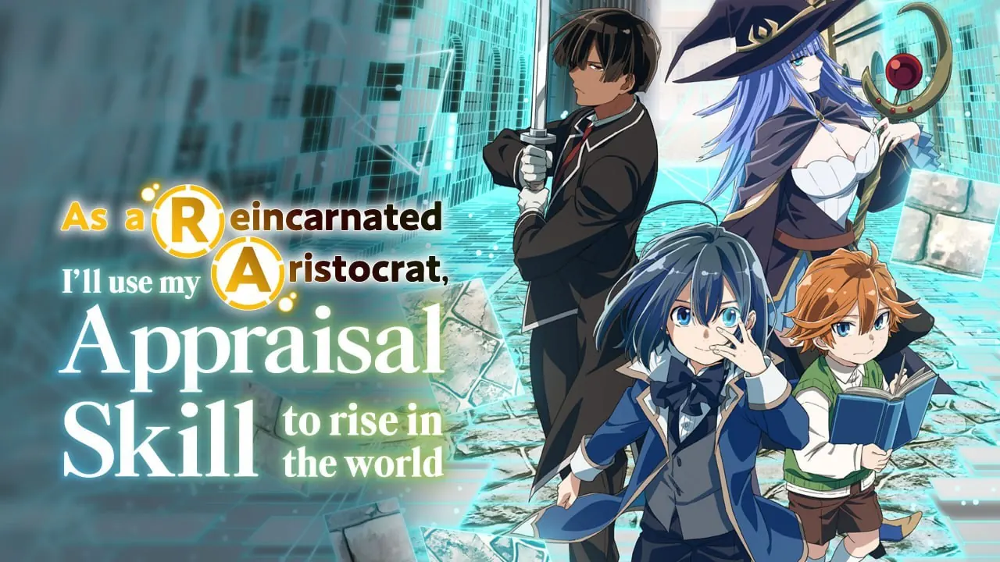

As a Reincarnated Aristocrat - Season 1 Review: Every Episode

Last updated: 11 October 2026
Reincarnation stories are everywhere, and most of them hand the hero a sword, a system window and an excuse to be the strongest person in the room. As a Reincarnated Aristocrat, I'll Use My Appraisal Skill to Rise in the World does something quieter and, honestly, more interesting: it gives its protagonist the weakest possible body and one genuinely useful ability - the power to see what other people are worth.
Season 1 ran from 7 April to 23 June 2024, twelve episodes on the Agaru Anime block, produced by Studio Mother and directed by Takao Kato. It is a slow-burn political fantasy, and it is much better than its long title suggests. This review walks through every episode, then gives an honest verdict.
Quick facts
- Full title: Tensei Kizoku, Kantei Skill de Nariagaru
- Season 1: 12 episodes, 7 April - 23 June 2024
- Studio: Studio Mother | Director: Takao Kato
- Opening: "Blue Days" by TRUE | Ending: "Finally" by Kana Hanazawa
- Source: Light novel by Miraijin A, illustrated by Jimmy (Kodansha)
- Streaming: Crunchyroll (worldwide outside East Asia)
- Genre: Isekai, political fantasy, adventure
Ratings
- AniPix score: 8.0 / 10
- MyAnimeList: around 7.15 across the season
- IMDb episode scores: 7.6 to 8.7, with episode 7 ("Succession") the highest rated
The gap between our 8.0 and MyAnimeList's 7.15 is worth explaining. The season starts slowly - the first three episodes are almost entirely setup - and a lot of viewers drop out before the story finds its feet. If you stay past episode 5, the payoff is real. That slow opening is the single biggest reason the community score sits lower than it should.
The premise
Ars Louvent dies at his desk in modern Japan and wakes up as the three-year-old son of a minor noble house in another world. He is not strong. He is not a genius. What he has is the Appraisal skill: when he looks at a person, he can read their innate talents, their aptitudes and their hidden potential.
That is the whole hook, and the show commits to it. Ars never becomes a fighter. His entire strategy for surviving a world of succession wars and shifting alliances is to find talented people nobody else has noticed, and give them a reason to stand beside him.
Episode by episode
Episode 1 - Reincarnation and Appraisal
Aired 7 April 2024
Three-year-old Ars discovers what his skill actually does. The turning point is Rietz, a servant from a social class nobody bothers to look at twice - but Ars appraises him and sees talents that would make him one of the finest warriors in the region. The episode ends with Ars deciding to recruit him. It is a small, quiet beginning, and it sets up everything.
Take: A confident opener that trusts the audience with a slow build. The Rietz appraisal scene is the moment the series proves it understands its own premise.
Episode 2 - Above and Below
Aired 14 April 2024
Recruitment expands beyond the estate. Ars travels to a larger city looking for someone with magical aptitude, and runs straight into the reality that good intentions do not survive contact with a rigid class system. He learns that being right about someone's talent does not mean you can simply hire them.
Take: The season's thesis statement. Ars is a decent person in an indecent world, and the show does not let him off easily.
Episode 3 - Answer
Aired 21 April 2024
Ars finally locates the extraordinary mage he has been searching for - and she has absolutely no interest in serving him. This is the first real test of his method: Appraisal tells you what someone is worth, it does not tell you how to earn their loyalty.
Take: The weakest of the opening three, but it puts the series' central limitation on the table early.
Episode 4 - Where Talent Dwells
Aired 28 April 2024
The recruitment drive continues and the Louvent household grows. At the same time, the political temperature starts to rise in the background, and Ars begins to understand that the world outside his small domain is far less stable than it looked from the inside.
Take: The season turns here. The talent-hunting stops being a hobby and starts being preparation.
Episode 5 - The Storm Arrives!
Aired 5 May 2024
Things go badly for House Louvent. Ars learns he has been given a fiancée - a political arrangement he had no say in - and the first hints of a much larger conflict start to surface.
Take: The comedy of a child being handed an adult marriage contract is played well, but the real weight is the politics creeping in.
Episode 6 - The Face of a Warrior
Aired 12 May 2024
Ars's father Raven is in worsening health. Then the governor is assassinated, and every local lord has to brace for war. With his father ailing, Ars has to lead House Louvent himself, well before he is ready.
Take: The best-directed episode of the first half. Ars is a child doing an adult's job, and the show never pretends that is fine.
Episode 7 - Succession
Aired 19 May 2024
Raven returns from campaign in terrible condition, and the household prepares for the worst. This is the emotional centre of the season - the moment Ars stops being a son being protected and becomes the head of a house that needs him to hold it together.
Take: The highest-rated episode on IMDb for a reason. Quiet, painful, and completely earned.
Episode 8 - A New Generation
Aired 26 May 2024
Ars formally takes over as lord of House Louvent. The episode is largely about the weight of that, and about the people around him choosing to follow a very young man into a very dangerous situation.
Take: A necessary reset. It sets the board for the back half of the season.
Episode 9 - Sounding Out
Aired 2 June 2024
With the governor dead, his sons are locked in a standoff over the succession. Lord Lumeire's faction has picked a side, but one district is holding out - and Ars decides to find out why before committing House Louvent to anything.
Take: The show shifts into political thriller mode, and it turns out to be very good at it.
Episode 10 - Couran Salamakhia
Aired 9 June 2024
Ars is invited to a private gathering hosted by Couran Salamakhia, the elder of the dead governor's two sons. Ars has no idea what to make of the invitation - or of the large ideas Couran is about to put in front of him.
Take: The introduction of Couran is the most important moment of the season. Everything in Season 2 grows out of this conversation.
Episode 11 - Mireille Grangeon
Aired 16 June 2024
Rietz is deeply sceptical about letting Mireille stay, given her reputation. Ars decides to trust his Appraisal over the rumours and lets her remain, against the advice of people who have known her longer.
Take: A direct test of the show's central idea: does Ars's skill justify overriding everyone else's judgement?
Episode 12 - Oath
Aired 23 June 2024
The mock battle that will decide Mireille's future - and, by extension, the future of House Louvent - plays out. It closes the season on a note that is equal parts victory and warning.
Take: A strong finale that resolves the season's arc while making it very clear the real war has not started yet.
What works
The premise is genuinely used. Appraisal is not a decoration. Every major decision Ars makes runs through it, and the show is honest about its limits - it tells you what a person can do, never whether they will say yes.
Politics done properly. The succession crisis, the district that will not commit, the invitation from Couran - this is patient, grounded political writing. Nobody conquers anything by shouting.
The supporting cast carries the season. Rietz, Charlotte, Rosell and later Mireille all get real interiority. Ars is deliberately a quiet protagonist, and the show knows it needs the people around him to be loud.
The art and direction are better than the budget suggests. Studio Mother keeps things clean and readable, and the character designs by Yuko Yahiro translate well from the light novel.
What does not work
The opening is too slow. Three episodes of setup before the story properly starts is a lot to ask, and it is the main reason the MyAnimeList score sits at 7.15 rather than higher.
Ars is a passive lead. He observes, appraises and reacts. That is thematically correct - he is not a fighter - but it means the show needs strong supporting characters to generate momentum, and in a few mid-season episodes it does not have enough of them.
Some plot threads are left hanging. The fiancée subplot and several of the early recruits get less follow-through than they deserve in twelve episodes.
Verdict
Season 1 is a smart, patient political fantasy that treats its audience like adults. It is not a power fantasy, it is not fast, and if you want fights every week you will be disappointed. What you get instead is a story about a boy who cannot fight, building a house out of other people's talent - and slowly discovering that talent is only half the problem.
AniPix score: 8.0 / 10 - slow to start, excellent once it gets going. If you can survive episodes 1 to 3, you will be rewarded.
Promotional artwork belongs to its original rights holders and is used here for review and commentary. Sources: Wikipedia episode list and production details; MyAnimeList and IMDb community scores; Rotten Tomatoes episode synopses. Scores are community-reported and change over time.